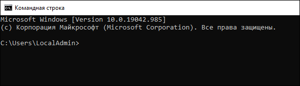
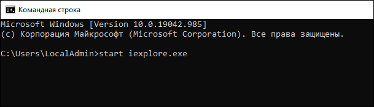
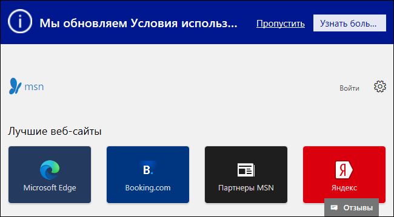

Вы можете запустить Internet Explorer из командной строки.
Чтобы запустить Internet Explorer из командной строки, выполните следующие
действия.
-
В левом нижнем углу экрана в строке поиска рядом со значком (Пуск) введите
cmd (см. изображение ниже).
-
Наклавиатуре нажмите на клавишу ВВОД.
Отобразится окно командной строки (см. изображение ниже).

-
Введите команду
start iexplore.exe и нажмите клавишу ВВОД (см.
изображение ниже).

Окно браузера отобразится на рабочем столе.
